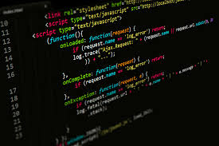

Fire is arguably the most important discovery in human history, as it dramatically altered the course of human evolution. Early humans discovered how to control fire more than a million years ago, and this ability transformed their lives in numerous ways. First and foremost, fire provided warmth and protection from predators, allowing humans to survive in colder climates and hostile environments. It also enabled the cooking of food, which made it easier to digest and allowed early humans to consume a broader range of nutrients, ultimately aiding brain development.
2. The Computer
The invention of the computer in the 20th century revolutionized how humans process information and solve problems. Early computers were massive, room-sized machines that could perform basic calculations and tasks. However, as technology progressed, computers became smaller, faster, and more powerful. Today, computers are integral to almost every aspect of daily life, from communication and entertainment to scientific research and industrial processes. They have enabled the automation of tasks that would take humans hours, days, or even years to complete manually.
3. Mathematics
Mathematics is not a physical invention, but rather a conceptual framework that has allowed humans to make sense of the world. From its earliest roots in counting and geometry to the development of algebra, calculus, and more, mathematics is the language of the universe. It underpins nearly every aspect of human civilization, from the construction of buildings and bridges to the development of modern technology. Without mathematics, we would not be able to calculate distances, understand the laws of physics, or develop the algorithms that power computers and the internet.
4. The Internet
The invention of the internet in the late 20th century has had an unparalleled impact on communication, commerce, education, and entertainment. Initially developed as a military project, the internet quickly expanded to connect academic institutions, businesses, and eventually, individuals across the globe. Today, the internet is a vast network that enables the instant exchange of information, breaking down geographical barriers and allowing people to communicate and collaborate in ways that were previously unimaginable.
5. JavaScript

JavaScript, invented in 1995 by Brendan Eich, is one of the most important programming languages in the world today. It is a key technology for web development, alongside HTML and CSS, and is used to create interactive elements on websites, such as animations, forms, and dynamic content updates. Unlike other programming languages, JavaScript can run directly in a web browser, which has made it an essential tool for front-end development. Almost every modern website uses JavaScript to some extent, making it one of the most widely used languages on the planet.